Tall trees, up to 50 m tall.
50 ಮೀ. ಎತ್ತರದವರೆಗೆ ಬೆಳೆಯುವ ಬಹುಎತ್ತರದ ಮರಗಳು.
50 മീറ്റര് വരെ ഉയരത്തില് വളരുന്ന വന്മരങ്ങള്.
பெரிய மரம் 50 மீ. உயரம் வரை வளரக்கூடியது
Branchlets terete, densely yellowish tomentose with annular scar formed by fallen stipules.
ಕಿರುಕೊಂಬೆಗಳು ದುಂಡಾಗಿದ್ದು, ದಟ್ಟವಾದ ಹಳದಿ ಬಣ್ಣದ ಮೃದು ತುಪ್ಪಳದಿಂದ ಹಾಗೂ ಉದುರಿದ ಕಾವಿನೆಲೆಗಳಿಂದುಂಟಾದ ವಲಯಾಕಾರದ ಗುರುತುಗಳಿಂದ ಕೂಡಿರುತ್ತವೆ
കൊഴിഞ്ഞുവീണ അനുപര്ണ്ണങ്ങളുടെ അടയാളങ്ങളോടുകൂടിയ, ഉപശാഖകള് ഉരുണ്ടതും, കനത്തില് മഞ്ഞനിറത്തിലുളള രോമങ്ങള് നിറഞ്ഞതുമാണ്.
சிறுநுனிக்கிளைகள் குறுக்குவெட்டுத் தோற்றத்தில் வளையமானது, அடர்ந்த மஞ்சள் நிறமான உரோமங்களுடையது மற்றும் இலைகள் உதிர்ந்ததால் உண்டாகும் வட்டவடுக்களுடையது.
Leaves simple, alternate, spiral; stipules ovate-lanceolate, densely yellowish hirsute, glabrous within, 1.8 cm long, caducous; petiole to 4.5 cm long, stellate tomentose; lamina 20.5 x 15 cm, broadly-elliptic to ovate, apex shortly acuminate, base rounded or subcordate, margin entire or crenate, glabrous above, stellate pubescent beneath, coriaceous; midrib slightly raised above; secondary_nerves 13-16 pairs, strong, nearly parallel, abruptly curved at margin; tertiary_nerves percurrent, nearly parallel, oblique to midrib.
ಎಲೆಗಳು ಸರಳವಾಗಿದ್ದು, ಪರ್ಯಾಯ ಹಾಗೂ ಸುತ್ತು ಜೋಡನಾ ವ್ಯವಸ್ಥೆಯಲ್ಲಿರುತ್ತವೆ;ಕಾವಿನೆಲೆಗಳು ಉದುರಿ ಹೋಗುವಂತಹವು,ಅಂಡಾಕಾರ-ಭರ್ಜಿಯ ಆಕಾರದಲ್ಲಿದ್ದು, 1.8 ಸೆಂ.ಮೀ. ವರೆಗಿನ ಉದ್ದ, ಹಳದಿ ಒರಟು ರೋಮಗಳಿಂದ ಕೂಡಿದ ಹೊರಮೈ ಹೊಂದಿದು ಒಳಮೈರೋಮರಹಿತವಾಗಿರುತ್ತವೆ; ಎಲೆತೊಟ್ಟುಗಳು 4.5 ಸೆಂ.ಮೀ. ಉದ್ದ ಹೊಂದಿದ್ದು, ನಕ್ಷತ್ರಾಕಾರದ ದಟ್ಟ ಮೃದು ತುಪ್ಪಳದಿಂದ ಕೂಡಿರುತ್ತವೆ;ಪತ್ರಗಳು 20.5-15 ರೆಗಿನ ಗಾತ್ರ, ವಿಶಾಲವಾದ ಅಂಡವೃತ್ತದಿಂದ ಅಂಡಾಕಾರದ ಆಕಾರ ಹೊಂದಿರುತ್ತವೆ;ಪತ್ರದ ತುದಿ ಸಂಕ್ಷೇಪವಾದ ಕ್ರಮೇಣವಾಗಿ ಚೂಪಾಗುವ ರೀತಿಯದಾಗಿದ್ದು ಬುಡ ದುಂಡಾಕಾರ ಅಥವಾ ಉಪ-ಹೃದಯಾಕಾರದಲ್ಲಿರುತ್ತದೆ, ಅಂಚು ನಯವಾಗಿರುತ್ತದೆ ಅಥವಾ ದುಂಡೇಣಿನ ಹಲ್ಲುಗಳ ಸಮೇತವಿರುತ್ತದೆ; ಪತ್ರಗಳು ತೊಗಲನ್ನೋಲುವ ಮಾದರಿಯಲ್ಲಿದ್ದು ಮೇಲ್ಭಾಗದಲ್ಲಿ ರೋಮರಹಿತವಾಗಿದ್ದು ತಳಭಾಗದಲ್ಲಿ ನಕ್ಷತ್ರಾಕಾರದ ದಟ್ಟ ಮೃದುತುಪ್ಪಳದಿಂದ ಕೂಡಿರುತ್ತವೆ;ಮಧ್ಯನಾಳ ಪತ್ರದ ಮೇಲ್ಭಾಗದಲ್ಲಿ ಕಾಲುವೆ- ಗೆರೆಗಳಿಂದ ಕೂಡಿರುತ್ತದೆ;ಎರಡನೇ ದರ್ಜೆಯ ನಾಳಗಳು13 ರಿಂದ 16 ಧೃಢವಾದ ಜೋಡಿಗಳಿದ್ದು ಹೆಚ್ಚೂ ಕಡಿಮೆ ಸಮಾನಾಂತರದಲ್ಲಿದ್ದು ಹಠಾತ್ತನೆ ಪತ್ರದ ಅಂಚಿನ ಬಳಿ ಬಾಗುತ್ತವೆ; ಮೂರನೇ ದರ್ಜೆಯ ನಾಳಗಳು ಎಲೆ ದಿಂಡಿಗೆ ಅಡ್ಡವಾಗಿ ಕೂಡುವಂತವು, ಹೆಚ್ಚೂ ಕಡಿಮೆ ಸಮಾನಾಂತರದಲ್ಲಿದ್ದು ಹಾಗೂ ಮಧ್ಯನಾಳಕ್ಕೆ ಓರೆಯಾಗಿ -ರುವಂತವು.
ഇലകള് ലഘുവും, ഏകാന്തരമായി; വല്ത്തുളക്രമത്തിലുളളതാണ്; 1.8 സെ.മീ നീളമുളളതും, എളുപ്പംപൊഴിഞ്ഞ് വീഴുന്നതുമായ അനുപര്ണ്ണങ്ങള് അണ്ഡാകാരം-കുന്താകൃതിയിലുളളതും, കനത്തില് മഞ്ഞരോമങ്ങള് നിറഞ്ഞതുമാണ്, അകഭാഗം അരോമിലമാണ്; ഇലഞെട്ട് 4.5 സെ.മീ നീളമുളളതും, നക്ഷത്രാകാര രോമങ്ങള് നിറഞ്ഞതുമാണ്; പത്രഫലകത്തിന് 20.5 സെ.മീ നീളവും 15 സെ.മീ വീതിയും, വീതിയേറിയ-ദീര്ഘവൃത്താകാരം തൊട്ട് അണ്ഡാകാരം വരെയുളള ആകൃതിയുമാണ്, പത്രാഗ്രം ലഘുവായ ദീര്ഘാഗ്രത്തോടുകൂടിയതാണ്, പത്രാധാരം വൃത്താകാരമോ ഉപഹൃദയാകാരമോ ആണ്, അരികുകള് അവിഭജിതമോ ദന്തുരമോ ആണ്, പത്രഫലകം മുകളില് അരോമിലവും, കീഴെ നക്ഷത്രാകാര രോമങ്ങള് നിറഞ്ഞതുമാണ്, ചര്മ്മില പ്രകൃതം; മുഖ്യസിര മുകളില് ചാലോട് കൂടിയതാണ്; 13 മുതല് 16 വരെ ജോഡി ദ്വിതീയ ഞരമ്പുകള് ദൃഢവും, ഏതാണ്ട് സമാന്തരവും, അരികുകള്ക്കടുത്ത് വളഞ്ഞിരിക്കുന്നതുമാണ്; ത്രിതീയ ഞരമ്പുകള് പെര്കറന്റാണ്, ഏതാണ്ട്, സമാന്തരവും മുഖ്യസിരയോട് ചരിഞ്ഞ് നില്ക്കുന്നതുമാണ്.
இலைகள் தனித்தவை, மாற்றுஅடுக்கமானவை, சுழல் அமைப்பு; இலையடிச்செதில்கள் முட்டை வடிவம் - ஈட்டி வடிவமுடையது, அடர்ந்த மஞ்சள் நிறமான உரோமங்களுடையது, 1.8 செ.மீ. நீளமானது, உதிரக்கூடியது; இலைக்காம்பு 4.5 செ.மீ., நீளம் வரை இருக்கும், நட்சத்திர வடிவ மென்உரோமங்களுடையது; இலை அலகு 20.5 X 15 செ.மீ., அகன்ற நீள்வட்டம் முதல் முட்டை வடிவம், அலகின் நுனிகூரியது, அலகின் தளம் வட்டமானது அல்லது சிறிய இதய வடிவானது (சப்கார்டேட்), அலகின் விளிம்பு முழுமையானது அல்லது பிறை வடிவ பற்களுடையது (கிரனேட்), மேற்பகுதியில் உரோமங்களற்றது, கீழ்பரப்பில் உரோமங்களுடையது, கோரியேசியஸ்; மையநரம்பு மேற்புறத்தில் அலகின் பரப்பைவிட சிறிது உயர்ந்து இருக்கும்; இரண்டாம் நிலை நரம்புகள் 13-16 ஜோடிகள், தடித்தது, கிட்டதட்ட கிடைமட்டமானது, விளிம்பு பகுதியில் வளைவானது; மூன்றாம் நிலை நரம்புகள் பெர்க்கரண்ட், கிட்டதட்ட இணையானது மையநரம்பை ஒட்டி வளைவானது
Inflorescence racemes; flowers white.
ಹೂಗಳು ಬಿಳಿಬಣ್ಣದವುಗಳಾಗಿದ್ದು ಮಧ್ಯಾಭಿಸರ ಮಾದರಿಯ ಪುಷ್ಪಮಂಜರಿಯಲ್ಲಿರುತ್ತವೆ.
പൂങ്കുല റസീമാണ്; വെളുത്ത പൂക്കള്.
ரெசீம் மஞ்சரி, மலர்கள் வெண்நிறமுடையது.
Nut, to 2.5 cm across, enclosed in 5 winged fruiting_calyx tube; calyx_lobes_accrescent, 2 larger and 3 shorter, reticulate; seeds 1-2.
ಕಾಯಿಗಳು 2.5 ಸೆಂ. ಮೀ. ವರೆಗಿನ ಅಡ್ಡಗಲ ಹೊಂದಿದ್ದು, ಕರಟ ಮಾದರಿಯವು ಹಾಗೂ 5-ರೆಕ್ಕೆಗಳುಳ್ಳ ಪುಷ್ಪಪಾತ್ರೆಯ ನಾಳದಿಂದ ಆವೃತವಾಗಿರುತ್ತವೆ; ಪುಷ್ಪಪಾತ್ರೆಯ ಪತ್ರಗಳು ವೃದ್ಧಿಸಿದ ರೀತಿಯವು ಹಾಗೂ 2 ದೊಡ್ಡದಾದ ಮತ್ತು 3 ಕಿರಿದಾದ ಹಾಗೂ ಜಾಲಬಂಧ ನಾಳ ವಿನ್ಯಾಸ ಹೊಂದಿರುವ ಪತ್ರಗಳನ್ನು ಹೊಂದಿರುತ್ತವೆ; ಬೀಜಗಳು 1 ರಿಂದ 2.
അഞ്ച് ചിറകുകളുളള വിദളത്തിന്റെ കുഴലിനകത്ത് ഉണ്ടാകുന്ന കായ, 2.5 സെ.മീ വരെ കുറുകേയുളള നട്ട് ആണ്, വിദളത്തിന്റെ കര്ണ്ണങ്ങള് വികസിച്ചതാണ് - ആണ്, രണ്ടെണ്ണം വലുതും 3 എണ്ണം ചെറുതും, ജാലിതമാണ്; ഒന്നോ-രണ്ടോ വിത്തുകളുണ്ടാകും.
உலர்கனி (நட்), குறுக்குவெட்டுத் தோற்றத்தில் 2.5 செ.மீ., வரை நீளமானது, ஐந்து இறகு போன்ற புல்லி இதழ்களால் சூழப்பட்டது; புல்லி இதழ்கள் நிரந்தரமானவை, 2 பெரியது மற்றும் மூன்று சிறியது.
 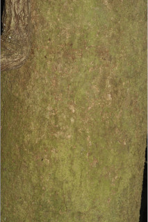
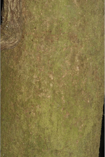


 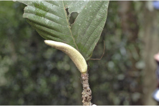
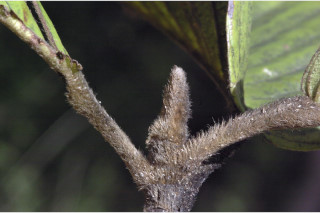
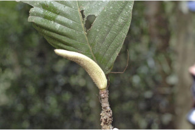
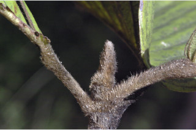

 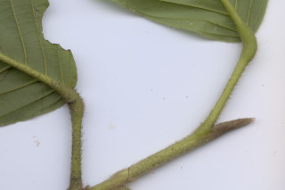
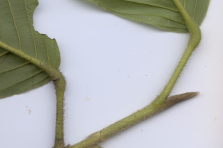


 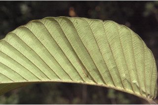
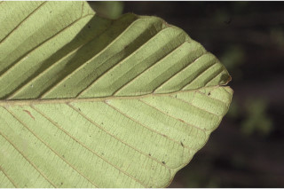
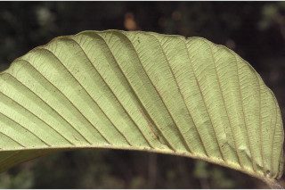
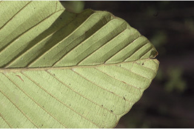